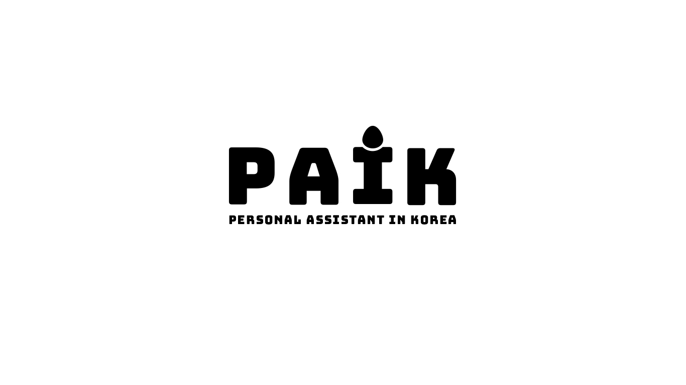
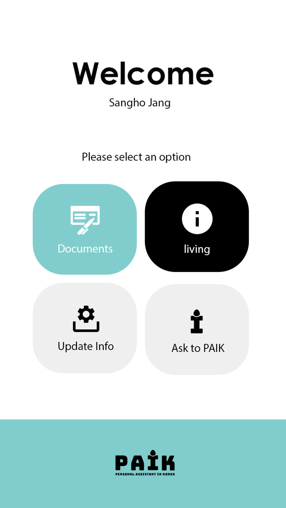
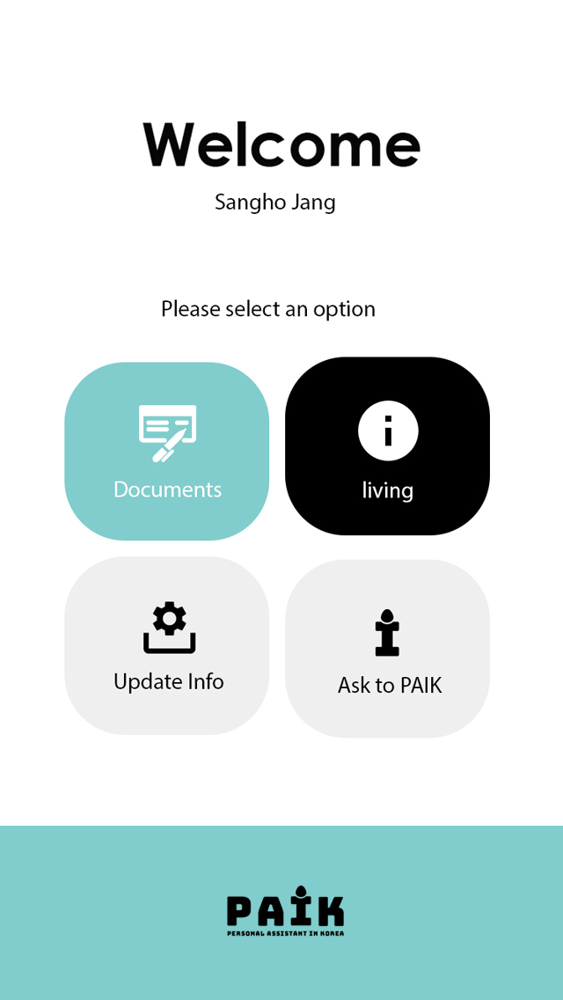

Welcome to PAIK. Thank you for visiting our websites.
This page is made for giving informations about our services to customers.
Our concept is "Personal Assistant In Korea"
We will promise you to serve the best services for you.
"Let foreigners to enjoy and feel more comfortable about the daily life in Korea."
With this slogan, we will help you to adjust well about Korea life by application service.
 

Please sign up first for using our service.
If you already have your account, you may login and able to use our service. After login, you may enter to main page.
On the main page, there are four categories. In the "Documents" category, you can get service about official documents.
In korea, most of the official documents are given in Korean language, and should submit with Korean language.
Many foreigners have been suffering from this, but you don't have to worry about these things anymore.
For the simple case as reporting to government about delay payment. But when it comes to more complicate and important case, we offer "matching with professional" service.
We also offer 'translator' matching service. We know many foreigners in Korea has been suffering from the conversation problems.


For more convenient matching service, please give us permission to use your location information with GPS.
You may also check the profile of the experts. After that, finding experts function will be available.
Find the experts who are nearby your location !
Sign up and use our service!


- Commision fee: 10% of the price you paid to experts
- All the experts should submit the detail profile.
- If you want to get consult by phone-calling, please call to +82-7327-2532
- For complain or compliment for the experts or our staffs, notice us in